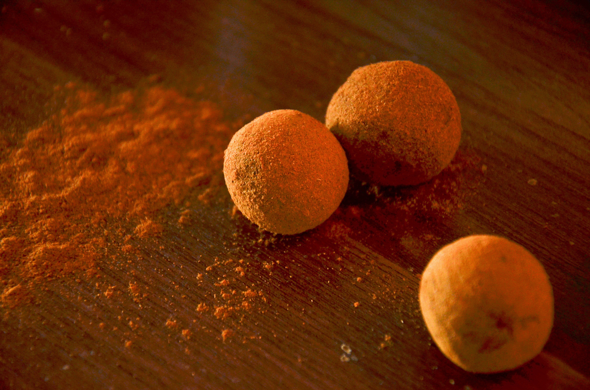

Graham Balls
Home

A yummy dessert that is fun to make and can be enjoyed by all ages.
Ingredients
- graham crackers
- condensed milk
- cocoa powder
- marshmallow
Steps
- Crush graham crackers into fine crumbs manually or by using a food processor.
- Add condensed milk and mix. Add some more condensed milk if the texture is dry.
- Grab about 1 tbsp of the mixture then flatten to add a marshmallow. Roll into a circle.
- Coat the ball in cocoa powder for an additional darker taste.